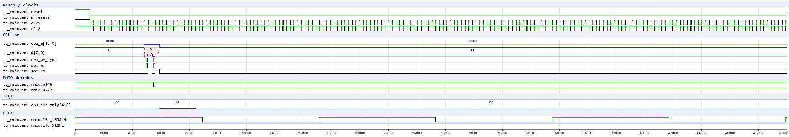
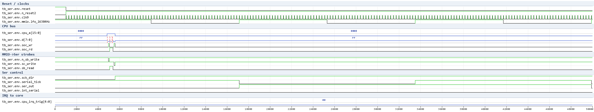
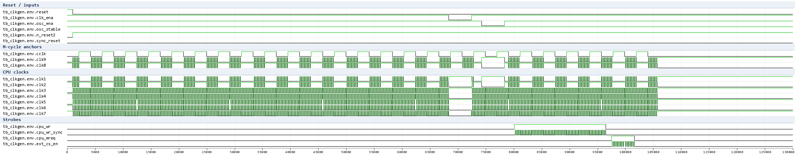
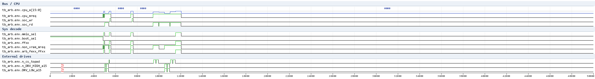
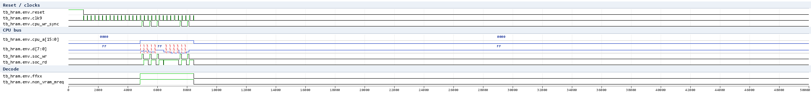
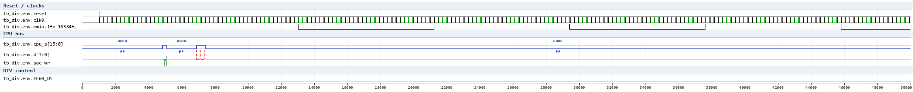
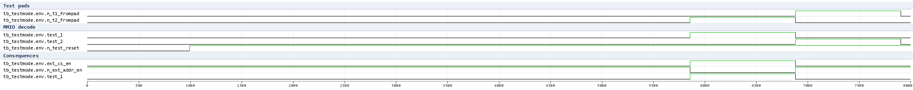

SoC small-domain waves (issue #396)
Waveform documentation for the SoC small-domain testbench suite
(HDL/soc/icarus/soc): ClkGen, Arbiter, MMIO, Ser (+ HRAM). Generated
with the WSL-native Icarus + the vcd2png.py renderer (the GTKWave
v3.3.128 save files are committed next to each test).
tb_mmio - MMIO register behaviour
Reset, TIMA/TAC/TMA write->read roundtrips, IF flag set/clear and the lfo_16384Hz (= clk9/64) divider.

What to look at in the wave:
-
resetdeassert ->n_reset2/sync_resetsettle after a few clock edges (ClkGen reset synchronizer). -
CPU cycles: address on
cpu_a,dcarries the data;cpu_wr_syncpulses = MMIOsoc_wrwrite windows; the decode clocks (w148= $FF07/TAC write,w223= $FF06/TMA write) are low inside the window and capture their dffs on the trailing edge. -
cpu_irq_trigbit4 pulses after theint_jpstrobe (IF joypad flag) and clears after the CPU IRQ acknowledge. -
lfo_16384Hz: 64 toggles per 4096clk9cycles (clk9 / 64).
tb_ser - Serial link
SB load, SC start with the internal shift clock, 8-tick transfer,
int_serial on completion, SC start-bit auto-clear, IF serial flag.

Verified behaviour:
sck_dir= SC bit0 (internal clock master when 1).-
Writing SC bit7 = 1 starts an 8-tick transfer;
serial_tickpulses 8 times; SB shifts out onser_outand in fromn_sin(idle high -> all ones after the transfer). -
On completion
int_serialrises, the MMIO IF serial flag (cpu_irq_trig[3]) is set, and the SC start bit self-clears. -
IF serial flag is cleared by the CPU IRQ acknowledge.
- SB read-back of an arbitrary loaded value shows only bus-bit0 (read-back polarity/order open question - the loaded value is proven through the shift result).
tb_clkgen - ClkGen
Reset synchronizer, clk_ena/osc_ena gating and the phase structure of the nine clock outputs.

Verified behaviour (tb_clkgen PASS + clkgen_phases.py table):
-
M-cycle = 4 oscillator cycles (256 ns at the test frequency); clk1/clk3/ clk5/clk9 rise at T0, clk2/clk8 at +1 osc, clk4 at +2, clk6/clk7 at +3; cclk follows the oscillator.
-
clk_ena stops clk1..clk7 while clk9 keeps running; osc_ena stops the whole tree; cpu_wr_sync pulses once per M-cycle; ext_cs_en is an active-low per-M-cycle pulse while cpu_mreq is high.
tb_arb - Arbiter Sys Decode + BANK
Address-decode sweep of mmio_sel/boot_sel/ffxx/non_vram_mreq/ arb_fexx_ffxx, the $FF50 BANK register disabling the internal boot ROM, and the VRAM-window definition of non_vram_mreq.

Verified behaviour (tb_arb PASS):
boot_sel= 1 for $0000-$00FF (with the BANK register clear), else 0.ffxx= 1 for $FFxx;mmio_sel= 1 for $FE00+ (FExx/FFxx window).non_vram_mreq= MREQ & not the $8000-$9FFF VRAM window.- writing $FF50 = 1 disables the internal boot ROM (boot_sel goes 0) and is sticky (writing $FF50 = 0 does not re-enable it).
tb_hram - HRAM (behavioral model)
Roundtrips through the real MMIO/Arb decode into the behavioral
hram_model.v (the real macro's storage cells are TBD stubs in sram.v).

Verified (tb_hram PASS, compiled with -DNO_SER):
-
writes/reads at $FF80/$FFC0/$FFFE round-trip; neighbouring cells stay independent; rewriting a cell to 0 works; $FFFF (IE) is outside the HRAM window (the netlist decode excludes a[6:0] = 0x7F) so a write there does not touch the RAM.
-
the model captures on the
soc_wrfalling edge (same point as the MMIO register decode clocks) and mirrors the netlist's window decode ffxx & a[7] & (a[6:0] != 0x7F).
tb_div - DIV counter
DIV reset-to-zero on a $FF04 write, clean read-back (mmio_weakbus.v), counting at the lfo rate, 8-bit wrap, and the FF60_D1 fast mode probe.

Verified (tb_div PASS):
-
after the $FF04 write DIV reads ~0, then counts one per lfo cycle (0x80 after 128 lfo cycles) and wraps at 256.
-
FF60_D1 = 1 (TEST_PAD.1, DIV clocked by clk9): read ~0x0C in the window - clk9-driven, exact source taps under analysis.
tb_testmode - TEST1/TEST2 decode
Pad decode of the test pins through the real MMIO test-mode logic.

Verified (tb_testmode PASS):
-
TEST1 (T2 pad low, T1 high):
test_1asserts,test_2off;ext_cs_enis forced high andn_ext_addr_enasserts (external address enable) - the internal CPU A/D bus drivers are disabled. -
TEST2 (T1 pad low, T2 high):
test_2asserts,test_1off. - both pads high (normal) -> both test modes off.
Open / upcoming tests
-
external /CS pad semantics need a pad + external-memory model (netlist: n_cs asserts for the a15&(a13|a14) & ~(a[15:10]=111111) windows with ext_cs_en, i.e. A000-BFFF / C000-FBFF, not the $0000-7FFF ROM region)
-
Ser d[6] bus modelling (see STATUS.md), TEST1 mode bus driving, DIV read-back modelling
See Readme.md for status and STATUS.md for the research log.